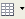
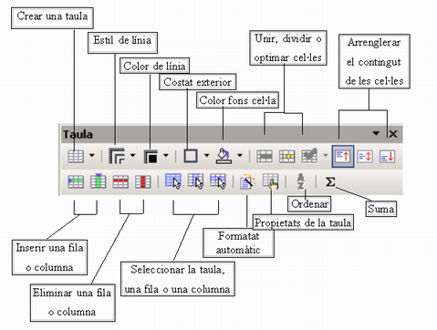
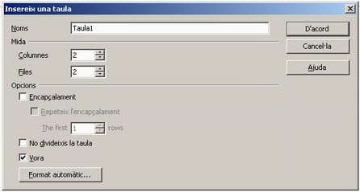
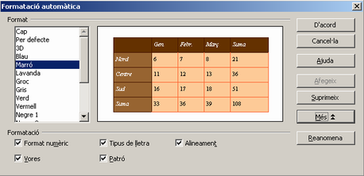
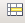
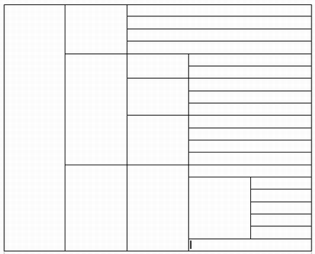

Crear Taules
El LibreOffice Writer incorpora una eina de creació de taules  que permet crear taules amb tot tipus d'alineacions possibles de cel·les tot activant la barra d'eines Taula.Per crear una taula, disposeu de dues opcions:
- Feu clic a la icona de creació d'una taula . Us apareixerà un quadre de diàleg que us permetrà aplicar-li format en els aspectes següents: nom de la taula; mida (en columnes i files); determinar si la taula tindrà una capçalera i, en cas afirmatiu, si aquesta s'ha de repetir i de quantes files consta; si la taula es pot trencar (entre dues pàgines) i si ha de tenir o no línies a la vora de les cel·les. Per últim, el mateix quadre de diàleg també us permetrà aplicar a la nova taula un formatat automàtic segons uns models predeterminats.
- Feu clic a la mateixa icona de creació d'una taula i, sense deixar de prémer el botó esquerre del ratolí, mantingueu-lo damunt la mateixa icona. Es despenjarà una graella en la qual podreu seleccionar el nombre de files i columnes que voleu que tingui la taula.
Abans o després de la creació de la taula, es pot canviar l'estil de la línia, el gruix i el color. Si el canvi es fa abans, afecta tota la taula per igual, mentre que si el canvi es fa una vegada ja creada, afectarà l'àrea seleccionada. Les cel·les poden canviar el color de fons, només cal situar-hi el cursor i escollir el color. També es poden connectar i separar (tot clicant sobre les icones corresponents de la barra d'eines). El botó contextual del ratolí (botó dret) ofereix una sèrie d'opcions en funció del tipus de selecció existent.
Representeu en forma de taula el següent esquema de classificació de les empreses. Empreses
- Grandària:
- Artesanals
- Petites
- Mitjanes
- Grans
- Sectors econòmics:
- Primari:
- Agropecuàries
- Extractives
- Secundari:
- I. Transformadores
- Constructores
- P. Energia
- Terciari:
- Comercials
- Financeres
- Asseguradores
- De transports
- Naturalesa jurídica:
- Privades:
- Individuals
- Socials:
- Col·lectives
- Comandaries
- R. Limitada
- S. Anònimes
- …
- Públiques
- Creeu un document en blanc.
- Demaneu Taula | Insereix | Taula… (o cliqueu la icona de creació d'una taula). Establiu Columnes:5, Files: 20 i premeu el botó D'acord.
- Si no apareix de forma automàtica la barra d'eines Taula, crideu-la mitjançant Visualitza | Barra d'eines | Taula.
- Seleccioneu els blocs de cel·les amb el ratolí, i uniu-les amb l'eina (Fusiona les cel·les) fins que l'aspecte s'assembli al de la imatge:
- Entreu els textos proposats i centreu-los en vertical amb l'ajut de l'eina .
- Deseu el document amb el nom empreses.odt

|
|

|
|